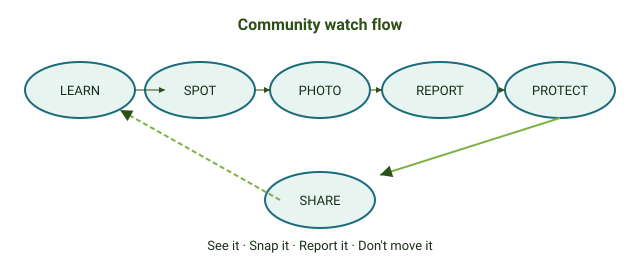
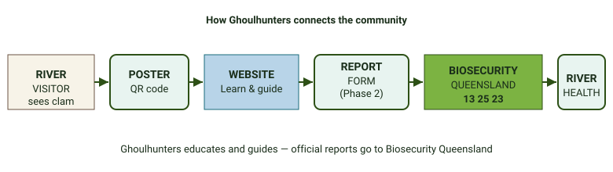
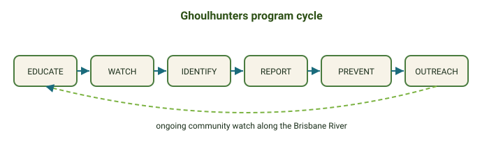

What is the blueprint?
The blueprint is the shared plan for every Ghoulhunters watch program. It shows how we connect river visitors, education materials, and official biosecurity reporting — whether the target is freshwater gold clam or another invasive species added in the future.
Ghoulhunters app & web system
Our proposed plan connects the mobile app, a web application, trained volunteers, and the spotter rewards program — from the first photo to safe disposal.
Animation shows the full journey. Always report to Biosecurity Queensland (13 25 23) as well. Learn about spotter rewards.
Community watch flow
What every visitor should do: learn, spot, photograph, report, and help protect the environment.

Figure 1 — The Ghoulhunters community watch flow (all programs)
How each program connects
River visitor → poster QR code → website → report form (Phase 2) → Biosecurity Queensland → healthier environment

Figure 2 — How Ghoulhunters connects the community
Program cycle
Each watch program runs as an ongoing cycle — educating the community and preventing spread.

Figure 3 — Ongoing Ghoulhunters program cycle
Report flow (river visitor)

Figure 4 — What to do when you see a suspected invasive species